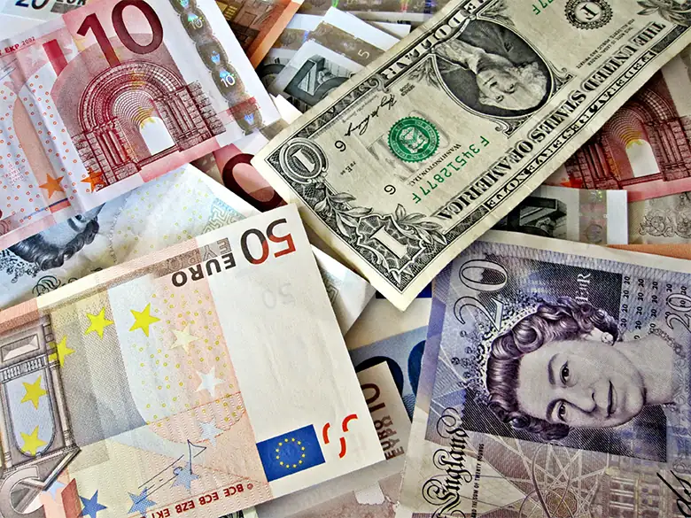
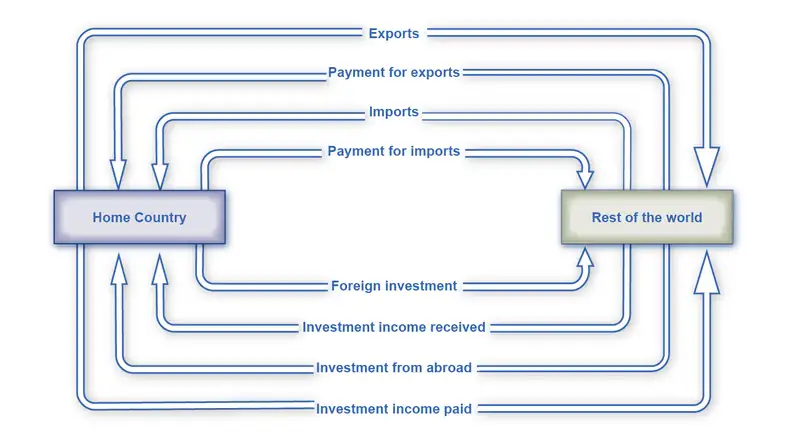

Chapter 23: The International Trade and Capital Flows¶
Introduction¶

Bring It Home: More than Meets the Eye in the Congo
How much do you interact with the global financial system? Do you think not much? Think again. Suppose you take out a student loan, or you deposit money into your bank account. You just affected domestic savings and borrowing. Now say you are at the mall and buy two T-shirts “made in China,” and later contribute to a charity that helps refugees. What is the impact? You affected how much money flows into and out of the United States. If you open an IRA savings account and put money in an international mutual fund, you are involved in the flow of money overseas. While your involvement may not seem as influential as that of someone like the president, who can increase or decrease foreign aid and, thereby, have a huge impact on money flows in and out of the country, you do interact with the global financial system on a daily basis.
The balance of payments—a term you will meet soon—seems like a huge topic, but once you learn the specific components of trade and money, it all makes sense. Along the way, you may have to give up some common misunderstandings about trade and answer some questions: If a country is running a trade deficit, is that bad? Is a trade surplus good? For example, look at the Democratic Republic of the Congo (often referred to as “Congo”), a large country in Central Africa. In 2013, it ran a trade surplus of $1 billion, so it must be doing well, right? In contrast, the trade deficit in the United States was $508 billion in 2013. Do these figures suggest that the United States economy is performing worse than the Congolese economy? Not necessarily. The U.S. trade deficit tends to worsen as the economy strengthens. In contrast, high poverty rates in the Congo persist, and these rates are not going down even with the positive trade balance. Clearly, it is more complicated than simply asserting that running a trade deficit is bad for the economy. You will learn more about these issues and others in this chapter.
Chapter Outline: Introduction to International Trade and Capital Flows
In this chapter, you will learn about:
- Measuring Trade Balances
- Trade Balances in Historical and International Context
- Trade Balances and Flows of Financial Capital
- The National Saving and Investment Identity
- The Pros and Cons of Trade Deficits and Surpluses
- The Difference between Level of Trade and the Trade Balance
The balance of trade (or trade balance) is any gap between a nation’s dollar value of its exports, or what its producers sell abroad, and a nation’s dollar value of imports, or the foreign-made products and services that households and businesses purchase. Recall from The Macroeconomic Perspective that if exports exceed imports, the economy has a trade surplus. If imports exceed exports, the economy has a trade deficit. If exports and imports are equal, then trade is balanced, but what happens when trade is out of balance and large trade surpluses or deficits exist?
Germany, for example, has had substantial trade surpluses in recent decades, in which exports have greatly exceeded imports. According to the World Bank, in 2020, Germany ran a trade surplus of $242 billion. In contrast, the U.S. economy in recent decades has experienced large trade deficits, in which imports have considerably exceeded exports. In 2020, for example, U.S. imports exceeded exports by $651 billion.
A series of financial crises triggered by unbalanced trade can lead economies into deep recessions. These crises begin with large trade deficits. At some point, foreign investors become pessimistic about the economy and move their money to other countries. The economy then drops into deep recession, with real GDP often falling up to 10% or more in a single year. This happened to Mexico in 1995 when their GDP fell 8.1%. A number of countries in East Asia—Thailand, South Korea, Malaysia, and Indonesia—succumbed to the same economic illness in 1997–1998 (called the Asian Financial Crisis). In the late 1990s and into the early 2000s, Russia and Argentina had the identical experience. What are the connections between imbalances of trade in goods and services and the flows of international financial capital that set off these economic avalanches?
We will start by examining the balance of trade in more detail, by looking at some patterns of trade balances in the United States and around the world. Then we will examine the intimate connection between international flows of goods and services and international flows of financial capital, which to economists are really just two sides of the same coin. People often assume that trade surpluses like those in Germany must be a positive sign for an economy, while trade deficits like those in the United States must be harmful. As it turns out, both trade surpluses and deficits can be either good or bad. We will see why in this chapter.
23.1 Measuring Trade Balances¶
Learning Objectives
By the end of this section, you will be able to:
- Explain merchandise trade balance, current account balance, and unilateral transfers
- Identify components of the U.S. current account balance
- Calculate the merchandise trade balance and current account balance using import and export data for a country
A few decades ago, it was common to track the solid or physical items that planes, trains, and trucks transported between countries as a way of measuring the balance of trade. Economists call this measurement the merchandise trade balance. In most high-income economies, including the United States, goods comprise less than half of a country’s total production, while services comprise more than half. The last two decades have seen a surge in international trade in services, powered by technological advances in telecommunications and computers that have made it possible to export or import customer services, finance, law, advertising, management consulting, software, construction engineering, and product design. Most global trade still takes the form of goods rather than services, and the government announces and the media prominently report the merchandise trade balance. Old habits are hard to break. Economists, however, typically rely on broader measures such as the balance of trade or the current account balance which includes other international flows of income and foreign aid.
Components of the U.S. Current Account Balance¶
Table 23.1 breaks down the four main components of the U.S. current account balance for the last quarter of 2015 (seasonally adjusted). The first line shows the merchandise trade balance; that is, exports and imports of goods. Because imports exceed exports, the trade balance in the final column is negative, showing a merchandise trade deficit. We can explain how the government collects this trade information in the following Clear It Up feature.
Table 23.1 Components of the U.S. Current Account Balance for 2020 (in billions of dollars). Source: https://apps.bea.gov/itable/index.cfm, ITA Table 1.1.
| Value of Exports (money flowing into the United States) | Value of Imports (money flowing out of the United States) | Balance | |
|---|---|---|---|
| Goods | $1,428.8 | $2,350.8 | –$922.0 |
| Services | $705.6 | $460.3 | $245.3 |
| Income receipts and payments | $957.9 | $769.4 | $188.5 |
| Unilateral transfers | $166.3 | $294.2 | –$127.9 |
| Current account balance | $3,258.6 | $3,874.7 | –$616.1 |
Clear It Up: How does the U.S. government collect trade statistics?
Do not confuse the balance of trade (which tracks imports and exports), with the current account balance, which includes not just exports and imports, but also income from investment and transfers.
The Bureau of Economic Analysis (BEA) within the U.S. Department of Commerce compiles statistics on the balance of trade using a variety of different sources. Merchandise importers and exporters must file monthly documents with the Census Bureau, which provides the basic data for tracking trade. To measure international trade in services—which can happen over a telephone line or computer network without shipping any physical goods—the BEA carries out a set of surveys. Another set of BEA surveys tracks investment flows, and there are even specific surveys to collect travel information from U.S. residents visiting Canada and Mexico. For measuring unilateral transfers, the BEA has access to official U.S. government spending on aid, and then also carries out a survey of charitable organizations that make foreign donations.
The BEA then cross-checks this information on international flows of goods and capital against other available data. For example, the Census Bureau also collects data from the shipping industry, which it can use to check the data on trade in goods. All companies involved in international flows of capital—including banks and companies making financial investments like stocks—must file reports, which the U.S. Department of the Treasury ultimately checks. The BEA also can cross check information on foreign trade by looking at data collected by other countries on their foreign trade with the United States, and also at the data collected by various international organizations. Take these data sources, stir carefully, and you have the U.S. balance of trade statistics. Much of the statistics that we cite in this chapter come from these sources.
The second row of Table 23.1 provides data on trade in services. Here, the U.S. economy is running a surplus. Although the level of trade in services is still relatively small compared to trade in goods, the importance of services has expanded substantially over the last few decades. For example, U.S. exports of services were equal to about one-half of U.S. exports of goods in 2020, compared to one-fifth in 1980.
The third component of the current account balance, labeled “income payments,” refers to money that U.S. financial investors received on their foreign investments (money flowing into the United States) and payments to foreign investors who had invested their funds here (money flowing out of the United States). The reason for including this money on foreign investment in the overall measure of trade, along with goods and services, is that, from an economic perspective, income is just as much an economic transaction as car, wheat, or oil shipments: it is just trade that is happening in the financial capital market.
The final category of the current account balance is unilateral transfers, which are payments that government, private charities, or individuals make in which they send money abroad without receiving any direct good or service. Economic or military assistance from the U.S. government to other countries fits into this category, as does spending abroad by charities to address poverty or social inequalities. When an individual in the United States sends money overseas, as is the case with some immigrants, it is also counted in this category. The current account balance treats these unilateral payments like imports, because they also involve a stream of payments leaving the country. For the U.S. economy, unilateral transfers are almost always negative. This pattern, however, does not always hold. In 1991, for example, when the United States led an international coalition against Saddam Hussein’s Iraq in the Gulf War, many other nations agreed that they would make payments to the United States to offset the U.S. war expenses. These payments were large enough that, in 1991, the overall U.S. balance on unilateral transfers was a positive $10 billion.
The following Work It Out feature steps you through the process of using the values for goods, services, and income payments to calculate the merchandise balance and the current account balance.
Work It Out: Calculating the Merchandise Balance and the Current Account Balance
Table 23.2 Calculating Merchandise Balance and Current Account Balance
| Exports (in $ billions) | Imports (in $ billions) | Balance | |
|---|---|---|---|
| Goods | |||
| Services | |||
| Income payments | |||
| Unilateral transfers | |||
| Current account balance |
Use the information given below to fill in Table 23.2, and then calculate:
- The merchandise balance
- The current account balance
Known information:
- Unilateral transfers: $130
- Exports in goods: $1,046
- Exports in services: $509
- Imports in goods: $1,562
- Imports in services: $371
- Income received by U.S. investors on foreign stocks and bonds: $561
- Income received by foreign investors on U.S. assets: $472
Step 1. Focus on goods and services first. Enter the dollar amount of exports of both goods and services under the Export column.
Step 2. Enter imports of goods and services under the Import column.
Step 3. Under the Export column and in the row for Income payments, enter the financial flows of money coming back to the United States. U.S. investors are earning this income from abroad.
Step 4. Under the Import column and in the row for Income payments, enter the financial flows of money going out of the United States to foreign investors. Foreign investors are earning this money on U.S. assets, like stocks.
Step 5. Unilateral transfers are money flowing out of the United States in the form of, for example, military aid, foreign aid, and global charities. Because the money leaves the country, enter it under Imports and in the final column as well, as a negative.
Step 6. Calculate the trade balance by subtracting imports from exports in both goods and services. Enter this in the final Balance column. This can be positive or negative.
Step 7. Subtract the income payments flowing out of the country (under Imports) from the money coming back to the United States (under Exports) and enter this amount under the Balance column.
Step 8. Enter unilateral transfers as a negative amount under the Balance column.
Step 9. The merchandise trade balance is the difference between exports of goods and imports of goods—the first number under Balance.
Step 10. Now sum up your columns for Exports, Imports, and Balance. The final balance number is the current account balance.
The merchandise balance of trade is the difference between exports and imports. In this case, it is equal to $1,046 – $1,562, a trade deficit of –$516 billion. The current account balance is –$419 billion. See the completed Table 23.3.
Table 23.3 Completed Merchandise Balance and Current Account Balance
| Value of Exports (money flowing into the United States) | Value of Imports (money flowing out of the United States) | Balance | |
|---|---|---|---|
| Goods | $1,046 | $1,562 | –$516 |
| Services | $509 | $371 | $138 |
| Income receipts and payments | $561 | $472 | $89 |
| Unilateral transfers | $0 | $130 | –$130 |
| Current account balance | $2,116 | $2,535 | –$419 |
23.2 Trade Balances in Historical and International Context¶
Learning Objectives
By the end of this section, you will be able to:
- Analyze graphs of the current account balance and the merchandise trade balance
- Identify patterns in U.S. trade surpluses and deficits
- Compare the U.S. trade surpluses and deficits to other countries' trade surpluses and deficits
We present the history of the U.S. current account balance in recent decades in several different ways. Figure 23.2 (a) shows the current account balance and the merchandise trade balance—the latter of which is simply the balance on goods exported versus imported—in dollar terms. Figure 23.2 (b) shows the current account balance and merchandise account balance yet again, this time as a share of the GDP for that year. By dividing the trade deficit in each year by GDP in that year, Figure 23.2 (b) factors out both inflation and growth in the real economy.
![The first graph shows the current account and merchandise trade balance in nominal dollars. Both lines dropped drastically between 1995 and 2005. In 2013, the current account balance is −422.2, and the merchandise trade balance is −702.284. The second graph shows the current account and merchandise trade balance as percentages of GDP. Both dropped around 1986, but increased gradually until 1991, when both dropped again with the low around 2005. As of 2013, both current account and merchandise credit are around –2% and –4% of the GDP respectively.)](img/cnx-econ3ev1-2-c23-02.webp)
By either measure, the U.S. balance of trade pattern is clear. From the 1960s into the 1970s, the U.S. economy had mostly small trade surpluses—that is, the graphs in Figure 23.2 show positive numbers. However, starting in the 1980s, the trade deficit increased rapidly, and after a tiny surplus in 1991, the current account trade deficit became even larger in the late 1990s and into the mid-2000s. However, the trade deficit declined in 2009 after the recession had taken hold, then rebounded partially in 2010 and remained stable up through 2019, before falling again in 2020.
Current Account Balance in Billions of Dollars.
Table 23.4 shows the U.S. trade picture in 2013 compared with some other economies from around the world. While the U.S. economy has consistently run trade deficits in recent years, Japan and many European nations, among them France and Germany, have consistently run trade surpluses. Some of the other countries listed include Brazil, the largest economy in Latin America; Nigeria, along with South Africa competing to be the largest economy in Africa; and China, India, and Korea. The first column offers one measure of an economy's globalization: exports of goods and services as a percentage of GDP. The second column shows the trade balance. Usually, most countries have trade surpluses or deficits that are less than 5% of GDP. As you can see, the U.S. current account balance is –2.6% of GDP, while Germany's is 8.4% of GDP.
Table 23.4 Level and Balance of Trade (Balance of Payments basis) in 2020 (figures as a percentage of GDP, Source: http://data.worldbank.org/indicator/BN.CAB.XOKA.GD.ZS)
| Exports of Goods and Services | Current Account Balance | |
|---|---|---|
| United States | 10.2% | –2.9% |
| Japan | 15.5% | 3.2% |
| Germany | 43.4% | 7.0% |
| United Kingdom | 27.9% | –2.6% |
| Canada | 29.0% | –1.8% |
| Sweden | 44.6% | 5.7% |
| Korea | 36.4% | 4.6% |
| Mexico | 40.2% | 2.4% |
| Brazil | 16.9% | –1.8% |
| China | 18.5% | 1.9% |
| India | 18.7% | 1.2% |
| Nigeria | 8.8% | –3.9% |
| World | - | 0.0% |
23.3 Trade Balances and Flows of Financial Capital¶
Learning Objectives
By the end of this section, you will be able to:
- Explain the connection between trade balances and financial capital flows
- Calculate comparative advantage
- Explain balanced trade in terms of investment and capital flows
As economists see it, trade surpluses can be either good or bad, depending on circumstances, and trade deficits can be good or bad, too. The challenge is to understand how the international flows of goods and services are connected with international flows of financial capital. In this module we will illustrate the intimate connection between trade balances and flows of financial capital in two ways: a parable of trade between Robinson Crusoe and Friday, and a circular flow diagram representing flows of trade and payments.
A Two-Person Economy: Robinson Crusoe and Friday¶
To understand how economists view trade deficits and surpluses, consider a parable based on the story of Robinson Crusoe. Crusoe, as you may remember from the classic novel by Daniel Defoe first published in 1719, was shipwrecked on a desert island. After living alone for some time, he is joined by a second person, whom he names Friday. Think about the balance of trade in a two-person economy like that of Robinson and Friday.
Robinson and Friday trade goods and services. Perhaps Robinson catches fish and trades them to Friday for coconuts, or Friday weaves a hat out of tree fronds and trades it to Robinson for help in carrying water. For a period of time, each individual trade is self-contained and complete. Because each trade is voluntary, both Robinson and Friday must feel that they are receiving fair value for what they are giving. As a result, each person’s exports are always equal to his imports, and trade is always in balance between the two. Neither person experiences either a trade deficit or a trade surplus.
However, one day Robinson approaches Friday with a proposition. Robinson wants to dig ditches for an irrigation system for his garden, but he knows that if he starts this project, he will not have much time left to fish and gather coconuts to feed himself each day. He proposes that Friday supply him with a certain number of fish and coconuts for several months, and then after that time, he promises to repay Friday out of the extra produce that he will be able to grow in his irrigated garden. If Friday accepts this offer, then a trade imbalance comes into being. For several months, Friday will have a trade surplus: that is, he is exporting to Robinson more than he is importing. More precisely, he is giving Robinson fish and coconuts, and at least for the moment, he is receiving nothing in return. Conversely, Robinson will have a trade deficit, because he is importing more from Friday than he is exporting.
This parable raises several useful issues in thinking about what a trade deficit and a trade surplus really mean in economic terms. The first issue that this story of Robinson and Friday raises is this: Is it better to have a trade surplus or a trade deficit? The answer, as in any voluntary market interaction, is that if both parties agree to the transaction, then they may both be better off. Over time, if Robinson’s irrigated garden is a success, it is certainly possible that both Robinson and Friday can benefit from this agreement.
The parable raises a second issue: What can go wrong? Robinson’s proposal to Friday introduces an element of uncertainty. Friday is, in effect, making a loan of fish and coconuts to Robinson, and Friday’s happiness with this arrangement will depend on whether Robinson repays that loan as planned, in full and on time. Perhaps Robinson spends several months loafing and never builds the irrigation system, or perhaps Robinson has been too optimistic about how much he will be able to grow with the new irrigation system, which turns out not to be very productive. Perhaps, after building the irrigation system, Robinson decides that he does not want to repay Friday as much as he previously agreed. Any of these developments will prompt a new round of negotiations between Friday and Robinson. Why the repayment failed is likely to shape Friday’s attitude toward these renegotiations. If Robinson worked very hard and the irrigation system just did not increase production as intended, Friday may have some sympathy. If Robinson loafed or if he just refuses to pay, Friday may become irritated.
A third issue that the parable raises is that an intimate relationship exists between a trade deficit and international borrowing, and between a trade surplus and international lending. The size of Friday’s trade surplus is exactly how much he is lending to Robinson. The size of Robinson’s trade deficit is exactly how much he is borrowing from Friday. To economists, a trade surplus literally means the same thing as an outflow of financial capital, and a trade deficit literally means the same thing as an inflow of financial capital. This last insight is worth exploring in greater detail, which we will do in the following section.
The story of Robinson and Friday also provides a good opportunity to consider the law of comparative advantage, which you learn more about in the International Trade chapter. The following Work It Out feature steps you through calculating comparative advantage for the wheat and cloth traded between the United States and Great Britain in the 1800s.
Work It Out: Calculating Comparative Advantage
In the 1800s, the United States and Britain traded wheat and cloth. Table 23.5 shows the varying hours of labor per unit of output.
Table 23.5
| Wheat (in bushels) | Cloth (in yards) | Relative labor cost of wheat (Pw/Pc) | Relative labor cost of cloth (Pc/Pw) | |
|---|---|---|---|---|
| United States | 8 | 9 | 8/9 | 9/8 |
| Britain | 4 | 3 | 4/3 | 3/4 |
Step 1. Observe from Table 23.5 that, in the United States, it takes eight hours to supply a bushel of wheat and nine hours to supply a yard of cloth. In contrast, it takes four hours to supply a bushel of wheat and three hours to supply a yard of cloth in Britain.
Step 2. Recognize the difference between absolute advantage and comparative advantage. Britain has an absolute advantage (lowest cost) in each good, since it takes a lower amount of labor to make each good in Britain. Britain also has a comparative advantage in the production of cloth (lower opportunity cost in cloth (3/4 versus 9/8)). The United States has a comparative advantage in wheat production (lower opportunity cost of 8/9 versus 4/3).
Step 3. Determine the relative price of one good in terms of the other good. The price of wheat, in this example, is the amount of cloth you have to give up. To find this price, convert the hours per unit of wheat and cloth into units per hour. To do so, observe that in the United States it takes eight hours to make a bushel of wheat, so workers can process 1/8 of a bushel of wheat in an hour. It takes nine hours to make a yard of cloth in the United States, so workers can produce 1/9 of a yard of cloth in an hour. If you divide the amount of cloth (1/9 of a yard) by the amount of wheat you give up (1/8 of a bushel) in an hour, you find the price (8/9) of one good (wheat) in terms of the other (cloth).
The Balance of Trade as the Balance of Payments¶
The connection between trade balances and international flows of financial capital is so close that economists sometimes describe the balance of trade as the balance of payments. Each category of the current account balance involves a corresponding flow of payments between a given country and the rest of the world economy.
Figure 23.3 shows the flow of goods and services and payments between one country—the United States in this example—and the rest of the world. The top line shows U.S. exports of goods and services, while the second line shows financial payments from purchasers in other countries back to the U.S. economy. The third line then shows U.S. imports of goods, services, and investment, and the fourth line shows payments from the home economy to the rest of the world. Flow of goods and services (lines one and three) show up in the current account, while we find flow of funds (lines two and four) in the financial account.
The bottom four lines in Figure 23.3 show the flows of investment income. In the first of the bottom lines, we see investments made abroad with funds flowing from the home country to the rest of the world. Investment income stemming from an investment abroad then runs in the other direction from the rest of the world to the home country. Similarly, we see on the bottom third line, an investment from the rest of the world into the home country and investment income (bottom fourth line) flowing from the home country to the rest of the world. We find the investment income (bottom lines two and four) in the current account, while investment to the rest of the world or into the home country (lines one and three) is in the financial account. This figure does not show unilateral transfers, the fourth item in the current account.

A current account deficit means that, the country is a net borrower from abroad. Conversely, a positive current account balance means a country is a net lender to the rest of the world. Just like the parable of Robinson and Friday, the lesson is that a trade surplus means an overall outflow of financial investment capital, as domestic investors put their funds abroad, while a deficit in the current account balance is exactly equal to the overall or net inflow of foreign investment capital from abroad.
It is important to recognize that an inflow and outflow of foreign capital does not necessarily refer to a debt that governments owe to other governments, although government debt may be part of the picture. Instead, these international flows of financial capital refer to all of the ways in which private investors in one country may invest in another country—by buying real estate, companies, and financial investments like stocks and bonds.
23.4 The National Saving and Investment Identity¶
Learning Objectives
By the end of this section, you will be able to:
- Explain the determinants of trade and current account balance
- Identify and calculate supply and demand for financial capital
- Explain how a nation's own level of domestic saving and investment determines a nation's balance of trade
- Predict the rising and falling of trade deficits based on a nation's saving and investment identity
The close connection between trade balances and international flows of savings and investments leads to a macroeconomic analysis. This approach views trade balances—and their associated flows of financial capital—in the context of the overall levels of savings and financial investment in the economy.
Understanding the Determinants of the Trade and Current Account Balance¶
The national saving and investment identity provides a useful way to understand the determinants of the trade and current account balance. In a nation’s financial capital market, the quantity of financial capital supplied at any given time must equal the quantity of financial capital demanded for purposes of making investments. What is on the supply and demand sides of financial capital? See the following Clear It Up feature for the answer to this question.
Clear It Up: What comprises the supply and demand of financial capital?
A country’s national savings is the total of its domestic savings by household and companies (private savings) as well as the government (public savings). If a country is running a trade deficit, it means money from abroad is entering the country and the government considers it part of the supply of financial capital.
The demand for financial capital (money) represents groups that are borrowing the money. Businesses need to borrow to finance their investments in factories, materials, and personnel. When the federal government runs a budget deficit, it is also borrowing money from investors by selling Treasury bonds. Therefore, both business investment and the federal government can demand (or borrow) the supply of savings.
There are two main sources for the supply of financial capital in the U.S. economy: saving by individuals and firms, called S, and the inflow of financial capital from foreign investors, which is equal to the trade deficit (M – X), or imports minus exports. There are also two main sources of demand for financial capital in the U.S. economy: private sector investment, I, and government borrowing, where the government needs to borrow when government spending, G, is higher than the taxes collected, T. We can express this national savings and investment identity in algebraic terms:
Again, in this equation, S is private savings, T is taxes, G is government spending, M is imports, X is exports, and I is investment. This relationship is true as a matter of definition because, for the macro economy, the quantity supplied of financial capital must be equal to the quantity demanded.
However, certain components of the national savings and investment identity can switch between the supply side and the demand side. Some countries, like the United States in most years since the 1970s, have budget deficits, which mean the government is spending more than it collects in taxes, and so the government needs to borrow funds. In this case, the government term would be G – T > 0, showing that spending is larger than taxes, and the government would be a demander of financial capital on the right-hand side of the equation (that is, a borrower), not a supplier of financial capital on the left-hand side. However, if the government runs a budget surplus so that the taxes exceed spending, as the U.S. government did from 1998 to 2001, then the government in that year was contributing to the supply of financial capital (T – G > 0), and would appear on the left (supplier or saving) side of the national savings and investment identity.
Similarly, if a national economy runs a trade surplus, the trade sector will involve an outflow of financial capital to other countries. A trade surplus means that the domestic financial capital is in surplus within a country and can be invested in other countries.
The fundamental notion that total quantity of financial capital demanded equals total quantity of financial capital supplied must always remain true. Domestic savings will always appear as part of the supply of financial capital and domestic investment will always appear as part of the demand for financial capital. However, the government and trade balance elements of the equation can move back and forth as either suppliers or demanders of financial capital, depending on whether government budgets and the trade balance are in surplus or deficit.
Domestic Saving and Investment Determine the Trade Balance¶
One insight from the national saving and investment identity is that a nation's own levels of domestic saving and investment determine a nation’s balance of trade. To understand this point, rearrange the identity to put the balance of trade all by itself on one side of the equation. Consider first the situation with a trade deficit, and then the situation with a trade surplus.
In the case of a trade deficit, the national saving and investment identity can be rewritten as:
In this case, domestic investment is higher than domestic saving, including both private and government saving. The only way that domestic investment can exceed domestic saving is if capital is flowing into a country from abroad. After all, that extra financial capital for investment has to come from someplace.
Now consider a trade surplus from the standpoint of the national saving and investment identity:
In this case, domestic savings (both private and public) is higher than domestic investment. That extra financial capital will be invested abroad.
This connection of domestic saving and investment to the trade balance explains why economists view the balance of trade as a fundamentally macroeconomic phenomenon. As the national saving and investment identity shows, the performance of certain sectors of an economy, like cars or steel, do not determine the trade balance. Further, whether the nation’s trade laws and regulations encourage free trade or protectionism also does not determine the trade balance (see Globalization and Protectionism).
Exploring Trade Balances One Factor at a Time¶
The national saving and investment identity also provides a framework for thinking about what will cause trade deficits to rise or fall. Begin with the version of the identity that has domestic savings and investment on the left and the trade deficit on the right:
Now, consider the factors on the left-hand side of the equation one at a time, while holding the other factors constant.
As a first example, assume that the level of domestic investment in a country rises, while the level of private and public saving remains unchanged. Table 23.6 shows the result in the first row under the equation. Since the equality of the national savings and investment identity must continue to hold—it is, after all, an identity that must be true by definition—the rise in domestic investment will mean a higher trade deficit. This situation occurred in the U.S. economy in the late 1990s. Because of the surge of new information and communications technologies that became available, business investment increased substantially. A fall in private saving during this time and a rise in government saving more or less offset each other. As a result, the financial capital to fund that business investment came from abroad, which is one reason for the very high U.S. trade deficits of the late 1990s and early 2000s.
Table 23.6 Causes of a Changing Trade Balance
| Domestic Investment | – | Private Domestic Savings | – | Public Domestic Savings | = | Trade Deficit |
|---|---|---|---|---|---|---|
| I | – | S | – | (T – G) | = | (M – X) |
| Up | No change | No change | Then M – X must rise | |||
| No change | Up | No change | Then M – X must fall | |||
| No change | No change | Down | Then M – X must rise |
As a second scenario, assume that the level of domestic savings rises, while the level of domestic investment and public savings remain unchanged. In this case, the trade deficit would decline. As domestic savings rises, there would be less need for foreign financial capital to meet investment needs. For this reason, a policy proposal often made for reducing the U.S. trade deficit is to increase private saving—although exactly how to increase the overall rate of saving has proven controversial.
As a third scenario, imagine that the government budget deficit increased dramatically, while domestic investment and private savings remained unchanged. This scenario occurred in the U.S. economy in the mid-1980s. The federal budget deficit increased from $79 billion in 1981 to $221 billion in 1986—an increase in the demand for financial capital of $142 billion. The current account balance collapsed from a surplus of $5 billion in 1981 to a deficit of $147 billion in 1986—an increase in the supply of financial capital from abroad of $152 billion. The connection at that time is clear: a sharp increase in government borrowing increased the U.S. economy’s demand for financial capital, and foreign investors through the trade deficit primarily supplied that increase. The following Work It Out feature walks you through a scenario in which private domestic savings has to rise by a certain amount to reduce a trade deficit.
Work It Out: Solving Problems with the Saving and Investment Identity
Use the saving and investment identity to answer the following question: Country A has a trade deficit of $200 billion, private domestic savings of $500 billion, a government deficit of $200 billion, and private domestic investment of $500 billion. To reduce the $200 billion trade deficit by $100 billion, by how much does private domestic savings have to increase?
Step 1. Write out the savings investment formula solving for the trade deficit or surplus on the left:
Step 2. In the formula, put the amount for the trade deficit in as a negative number (X – M). The left side of your formula is now:
Step 3. Enter the private domestic savings (S) of $500 in the formula:
Step 4. Enter the private domestic investment (I) of $500 into the formula:
Step 5. The government budget surplus or balance is represented by (T – G). Enter a budget deficit amount for (T – G) of –200:
Step 6. Your formula now is:
The question is: To reduce your trade deficit (X – M) of –200 to –100 (in billions of dollars), by how much will savings have to rise?
Step 7. Summarize the answer: Private domestic savings needs to rise by $100 billion, to a total of $600 billion, for the two sides of the equation to remain equal (–100 = –100).
Short-Term Movements in the Business Cycle and the Trade Balance¶
In the short run, whether an economy is in a recession or on the upswing can affect trade imbalances. A recession tends to make a trade deficit smaller, or a trade surplus larger, while a period of strong economic growth tends to make a trade deficit larger, or a trade surplus smaller. These are not hard-and-fast rules, however.
As an example, note in Figure 23.2 that the U.S. trade deficit declined by almost half from 2006 to 2009. One primary reason for this change is that during the recession, as the U.S. economy slowed down, it purchased fewer of all goods, including fewer imports from abroad. However, buying power abroad fell less, and so U.S. exports did not fall by as much. On the other hand, during the 2020 pandemic-induced recession, the trade deficit expanded (current account balance plummeted) as the U.S. economy became more reliant on other countries for goods and services.
Conversely, in the mid-2000s, when the U.S. trade deficit became very large, a contributing short-term reason is that the U.S. economy was growing. As a result, there was considerable aggressive buying in the U.S. economy, including the buying of imports. Thus, a trade deficit (or a much lower trade surplus) often accompanies a rapidly growing domestic economy, while a trade surplus (or a much lower trade deficit) accompanies a slowing or recessionary domestic economy.
Regardless of whether the trade deficit falls or rises during expansions or downturns, when the trade deficit rises, it necessarily means a greater net inflow of foreign financial capital. The national saving and investment identity teaches that the rest of the economy can absorb this inflow of foreign financial capital in several different ways. For example, reduced private savings could offset the additional inflow of financial capital from abroad, leaving domestic investment and public saving unchanged. Alternatively, the inflow of foreign financial capital could result in higher domestic investment, leaving private and public saving unchanged. Yet another possibility is that greater government borrowing could absorb the inflow of foreign financial capital, leaving domestic saving and investment unchanged. The national saving and investment identity does not specify which of these scenarios, alone or in combination, will occur—only that one of them must occur.
23.5 The Pros and Cons of Trade Deficits and Surpluses¶
Learning Objectives
By the end of this section, you will be able to:
- Identify three ways in which borrowing money or running a trade deficit can result in a healthy economy
- Identify three ways in which borrowing money or running a trade deficit can result in a weaker economy
Because flows of trade always involve flows of financial payments, flows of international trade are actually the same as flows of international financial capital. The question of whether trade deficits or surpluses are good or bad for an economy is, in economic terms, exactly the same question as whether it is a good idea for an economy to rely on net inflows of financial capital from abroad or to make net investments of financial capital abroad. Conventional wisdom often holds that borrowing money is foolhardy, and that a prudent country, like a prudent person, should always rely on its own resources. While it is certainly possible to borrow too much—as anyone with an overloaded credit card can testify—borrowing at certain times can also make sound economic sense. For both individuals and countries, there is no economic merit in a policy of abstaining from participation in financial capital markets.
It makes economic sense to borrow when you are buying something with a long-run payoff; that is, when you are making an investment. For this reason, it can make economic sense to borrow for a college education, because the education will typically allow you to earn higher wages, and so to repay the loan and still come out ahead. It can also make sense for a business to borrow in order to purchase a machine that will last 10 years, as long as the machine will increase output and profits by more than enough to repay the loan. Similarly, it can make economic sense for a national economy to borrow from abroad, as long as it wisely invests the money in ways that will tend to raise the nation’s economic growth over time. Then, it will be possible for the national economy to repay the borrowed money over time and still end up better off than before.
One vivid example of a country that borrowed heavily from abroad, invested wisely, and did perfectly well is the United States during the nineteenth century. The United States ran a trade deficit in 40 of the 45 years from 1831 to 1875, which meant that it was importing capital from abroad over that time. However, that financial capital was mostly invested in projects like railroads that brought a substantial economic payoff. (See the following Clear It Up feature for more on this.)
A more recent example along these lines is the experience of South Korea, which had trade deficits during much of the 1970s—and so was an importer of capital over that time. However, South Korea also had high rates of investment in physical plant and equipment, and its economy grew rapidly. From the mid-1980s into the mid-1990s, South Korea often had trade surpluses—that is, it was repaying its past borrowing by sending capital abroad.
In contrast, some countries have run large trade deficits, borrowed heavily in global capital markets, and ended up in all kinds of trouble. Two specific sorts of trouble are worth examining. First, a borrower nation can find itself in a bind if it does not invest the incoming funds from abroad in a way that leads to increased productivity. Several of Latin America's large economies, including Mexico and Brazil, ran large trade deficits and borrowed heavily from abroad in the 1970s, but the inflow of financial capital did not boost productivity sufficiently, which meant that these countries faced enormous troubles repaying the money borrowed when economic conditions shifted during the 1980s. Similarly, it appears that a number of African nations that borrowed foreign funds in the 1970s and 1980s did not invest in productive economic assets. As a result, several of those countries later faced large interest payments, with no economic growth to show for the borrowed funds.
Clear It Up: Are trade deficits always harmful?
For most years of the nineteenth century, U.S. imports exceeded exports and the U.S. economy had a trade deficit. Yet the string of trade deficits did not hold back the economy at all. Instead, the trade deficits contributed to the strong economic growth that gave the U.S. economy the highest per capita GDP in the world by around 1900.
The U.S. trade deficits meant that the U.S. economy was receiving a net inflow of foreign capital from abroad. Much of that foreign capital flowed into two areas of investment—railroads and public infrastructure like roads, water systems, and schools—which were important to helping the U.S. economy grow.
We should not overstate the effect of foreign investment capital on U.S. economic growth. In most years the foreign financial capital represented no more than 6–10% of the funds that the government used for overall physical investment in the economy. Nonetheless, the trade deficit and the accompanying investment funds from abroad were clearly a help, not a hindrance, to the U.S. economy in the nineteenth century.
A second “trouble” is: What happens if the foreign money flows in, and then suddenly flows out again? We raised this scenario at the start of the chapter. In the mid-1990s, a number of countries in East Asia—Thailand, Indonesia, Malaysia, and South Korea—ran large trade deficits and imported capital from abroad. However, in 1997 and 1998 many foreign investors became concerned about the health of these economies, and quickly pulled their money out of stock and bond markets, real estate, and banks. The extremely rapid departure of that foreign capital staggered the banking systems and economies of these countries, plunging them into deep recession. We investigate and discuss the links between international capital flows, banks, and recession in The Impacts of Government Borrowing.
While a trade deficit is not always harmful, there is no guarantee that running a trade surplus will bring robust economic health. For example, Germany and Japan ran substantial trade surpluses for most of the last three decades. Regardless of their persistent trade surpluses, both countries have experienced occasional recessions and neither country has had especially robust annual growth in recent years. Read more about Japan’s trade surplus in the next Clear It Up feature.
Link It Up
Watch this video on whether or not trade deficit is good for the economy.
The sheer size and persistence of the U.S. trade deficits and inflows of foreign capital since the 1980s are a legitimate cause for concern. The huge U.S. economy will not be destabilized by an outflow of international capital as easily as, say, the comparatively tiny economies of Thailand and Indonesia were in 1997–1998. Even an economy that is not knocked down, however, can still be shaken. American policymakers should certainly be paying attention to those cases where a pattern of extensive and sustained current account deficits and foreign borrowing has gone badly—if only as a cautionary tale.
Clear It Up: Are trade surpluses always beneficial? Considering Japan since the 1990s.
Perhaps no economy around the world is better known for its trade surpluses than Japan. Since 1990, the size of these surpluses has often been near $100 billion per year. When Japan’s economy was growing vigorously in the 1960s and 1970s, many, especially non-economists, described its large trade surpluses either a cause or a result of its robust economic health. However, from a standpoint of economic growth, Japan’s economy has been teetering in and out of recession since 1990, with real GDP growth averaging only about 1% per year, and an unemployment rate that has been creeping higher. Clearly, a whopping trade surplus is no guarantee of economic good health.
Instead, Japan’s trade surplus reflects that Japan has a very high rate of domestic savings, more than the Japanese economy can invest domestically, and so it invests the extra funds abroad. In Japan’s slow economy, consumption of imports is relatively low, and the growth of consumption is relatively slow. Thus, Japan’s exports continually exceed its imports, leaving the trade surplus continually high. Recently, Japan’s trade surpluses began to deteriorate. In 2013, Japan ran a trade deficit due to the high cost of imported oil. By 2015, Japan again had a surplus and continues to run one today.
23.6 The Difference between Level of Trade and the Trade Balance¶
Learning Objectives
By the end of this section, you will be able to:
- Identify three factors that influence a country's level of trade
- Differentiate between balance of trade and level of trade
A nation’s level of trade may at first sound like much the same issue as the balance of trade, but these two are actually quite separate. It is perfectly possible for a country to have a very high level of trade—measured by its exports of goods and services as a share of its GDP—while it also has a near-balance between exports and imports. A high level of trade indicates that the nation exports a good portion of its production. It is also possible for a country’s trade to be a relatively low share of GDP, relative to global averages, but for the imbalance between its exports and its imports to be quite large. We emphasized this general theme earlier in Measuring Trade Balances, which offered some illustrative figures on trade levels and balances.
A country’s level of trade tells how much of its production it exports. We measure this by the percent of exports out of GDP. It indicates the degree of an economy's globalization. Some countries, such as Germany, have a high level of trade—they export almost 50% of their total production. The balance of trade tells us if the country is running a trade surplus or trade deficit. A country can have a low level of trade but a high trade deficit. (For example, the United States only exports around 10% of its GDP, but it has a trade deficit of over $600 billion.)
Three factors strongly influence a nation’s level of trade: the size of its economy, its geographic location, and its history of trade. Large economies like the United States can do much of their trading internally, while small economies like Sweden have less ability to provide what they want internally and tend to have higher ratios of exports and imports to GDP. Nations that are neighbors tend to trade more, since costs of transportation and communication are lower. Moreover, some nations have long and established patterns of international trade, while others do not.
Consequently, a relatively small economy like Sweden, with many nearby trading partners across Europe and a long history of foreign trade, has a high level of trade. Brazil and India, which are fairly large economies that have often sought to inhibit trade in recent decades, have lower levels of trade; whereas, the United States and Japan are extremely large economies that have comparatively few nearby trading partners. Both countries actually have quite low levels of trade by world standards. The ratio of exports to GDP in either the United States or in Japan is about half of the world average.
The balance of trade is a separate issue from the level of trade. The United States has a low level of trade, but had enormous trade deficits for most years from the mid-1980s into the 2000s. Japan has a low level of trade by world standards, but has typically shown large trade surpluses in recent decades. Nations like Germany and the United Kingdom have medium to high levels of trade by world standards, but Germany had a moderate trade surplus in 2020, while the United Kingdom had a moderate trade deficit. Their trade picture was roughly in balance in the late 1990s. Sweden had a high level of trade and a moderate trade surplus in 2020, while Canada had a high level of trade and a moderate trade deficit that same year.
In short, it is quite possible for nations with a relatively low level of trade, expressed as a percentage of GDP, to have relatively large trade deficits. It is also quite possible for nations with a near balance between exports and imports to worry about the consequences of high levels of trade for the economy. It is not inconsistent to believe that a high level of trade is potentially beneficial to an economy, because of the way it allows nations to play to their comparative advantages, and to also be concerned about any macroeconomic instability caused by a long-term pattern of large trade deficits. The following Clear It Up feature discusses how this sort of dynamic played out in Colonial India.
Clear It Up: Are trade surpluses always beneficial? Considering Colonial India.
India was formally under British rule from 1858 to 1947. During that time, India consistently had trade surpluses with Great Britain. Anyone who believes that trade surpluses are a sign of economic strength and dominance while trade deficits are a sign of economic weakness must find this pattern odd, since it would mean that colonial India was successfully dominating and exploiting Great Britain for almost a century—which was not true.
Instead, India’s trade surpluses with Great Britain meant that each year there was an overall flow of financial capital from India to Great Britain. In India, many heavily criticized this financial capital flow as the “drain,” and they viewed eliminating the financial capital drain as one of the many reasons why India would benefit from achieving independence.
Final Thoughts about Trade Balances¶
Trade deficits can be a good or a bad sign for an economy, and trade surpluses can be a good or a bad sign. Even a trade balance of zero—which just means that a nation is neither a net borrower nor lender in the international economy—can be either a good or bad sign. The fundamental economic question is not whether a nation’s economy is borrowing or lending at all, but whether the particular borrowing or lending in the particular economic conditions of that country makes sense.
It is interesting to reflect on how public attitudes toward trade deficits and surpluses might change if we could somehow change the labels that people and the news media affix to them. If we called a trade deficit “attracting foreign financial capital”—which accurately describes what a trade deficit means—then trade deficits might look more attractive. Conversely, if we called a trade surplus “shipping financial capital abroad”—which accurately captures what a trade surplus does—then trade surpluses might look less attractive. Either way, the key to understanding trade balances is to understand the relationships between flows of trade and flows of international payments, and what these relationships imply about the causes, benefits, and risks of different kinds of trade balances. The first step along this journey of understanding is to move beyond knee-jerk reactions to terms like “trade surplus,” “trade balance,” and “trade deficit.”
Bring It Home: More than Meets the Eye in the Congo
Now that you see the big picture, you undoubtedly realize that all of the economic choices you make, such as depositing savings or investing in an international mutual fund, do influence the flow of goods and services as well as the flows of money around the world.
You now know that a trade surplus does not necessarily tell us whether an economy is performing well or not. The Democratic Republic of the Congo ran a trade surplus in 2013, as we learned in the beginning of the chapter. Yet its current account balance was –$2.8 billion. However, the return of political stability and the rebuilding in the aftermath of the civil war there has meant a flow of investment and financial capital into the country. In this case, a negative current account balance means the country is being rebuilt—and that is a good thing.
Chapter Review¶
Key Terms¶
- balance of trade (trade balance)
- the gap, if any, between a nation’s exports and imports
- current account balance
- a broad measure of the balance of trade that includes trade in goods and services, as well as international flows of income and foreign aid
- exports of goods and services as a percentage of GDP
- the dollar value of exports divided by the dollar value of a country’s GDP
- financial capital
- the international flows of money that facilitates trade and investment
- merchandise trade balance
- the balance of trade looking only at goods
- national savings and investment identity
- the total of private savings and public savings (a government budget surplus)
- unilateral transfers
- “one-way payments” that governments, private entities, or individuals make that they sent abroad with nothing received in return
Key Concepts and Summary¶
23.1 Measuring Trade Balances¶
The trade balance measures the gap between a country’s exports and its imports. In most high-income economies, goods comprise less than half of a country’s total production, while services comprise more than half. The last two decades have seen a surge in international trade in services; however, most global trade still takes the form of goods rather than services. The current account balance includes the trade in goods, services, and money flowing into and out of a country from investments and unilateral transfers.
23.2 Trade Balances in Historical and International Context¶
The United States developed large trade surpluses in the early 1980s, swung back to a tiny trade surplus in 1991, and then had even larger trade deficits in the late 1990s and early 2000s. As we will see below, a trade deficit necessarily means a net inflow of financial capital from abroad, while a trade surplus necessarily means a net outflow of financial capital from an economy to other countries.
23.3 Trade Balances and Flows of Financial Capital¶
International flows of goods and services are closely connected to the international flows of financial capital. A current account deficit means that, after taking all the flows of payments from goods, services, and income together, the country is a net borrower from the rest of the world. A current account surplus is the opposite and means the country is a net lender to the rest of the world.
23.4 The National Saving and Investment Identity¶
The national saving and investment identity is based on the relationship that the total quantity of financial capital supplied from all sources must equal the total quantity of financial capital demanded from all sources. If S is private saving, T is taxes, G is government spending, M is imports, X is exports, and I is investment, then for an economy with a current account deficit and a budget deficit:
A recession tends to increase the trade balance (meaning a higher trade surplus or lower trade deficit), while economic boom will tend to decrease the trade balance (meaning a lower trade surplus or a larger trade deficit).
23.5 The Pros and Cons of Trade Deficits and Surpluses¶
Trade surpluses are no guarantee of economic health, and trade deficits are no guarantee of economic weakness. Either trade deficits or trade surpluses can work out well or poorly, depending on whether a government wisely invests the corresponding flows of financial capital.
23.6 The Difference between Level of Trade and the Trade Balance¶
There is a difference between the level of a country’s trade and the balance of trade. The government measures its level of trade by the percentage of exports out of GDP, or the size of the economy. Small economies that have nearby trading partners and a history of international trade will tend to have higher levels of trade. Larger economies with few nearby trading partners and a limited history of international trade will tend to have lower levels of trade. The level of trade is different from the trade balance. The level of trade depends on a country’s history of trade, its geography, and the size of its economy. A country’s balance of trade is the dollar difference between its exports and imports.
Trade deficits and trade surpluses are not necessarily good or bad—it depends on the circumstances. Even if a country is borrowing, if it invests that money in productivity-boosting investments it can lead to an improvement in long-term economic growth.
Self-Check Questions¶
23.1 Measuring Trade Balances¶
1. If foreign investors buy more U.S. stocks and bonds, how would that show up in the current account balance?
Answer
The stock and bond values will not show up in the current account. However, the dividends from the stocks and the interest from the bonds show up as an import to income in the current account.
2. If the trade deficit of the United States increases, how is the current account balance affected?
Answer
It becomes more negative as imports, which are a negative to the current account, are growing faster than exports, which are a positive.
3. State whether each of the following events involves a financial flow to the Mexican economy or a financial flow out of the Mexican economy:
- Mexico imports services from Japan
- Mexico exports goods to Canada
- U.S. investors receive a return from past financial investments in Mexico
Answer
- Money flows out of the Mexican economy.
- Money flows into the Mexican economy.
- Money flows out of the Mexican economy.
23.2 Trade Balances in Historical and International Context¶
4. In what way does comparing a country’s exports to GDP reflect its degree of globalization?
Answer
GDP is a dollar value of all production of goods and services. Exports are produced domestically but shipped abroad. The percent ratio of exports to GDP gives us an idea of how important exports are to the national economy out of all goods and services produced. For example, exports represent only 14% of U.S. GDP, but 50% of Germany’s GDP
5. At one point Canada’s GDP was $1,800 billion and its exports were $542 billion. What was Canada’s export ratio at this time?
Answer
Divide $542 billion by $1,800 billion.
6. The GDP for the United States is $18,036 billion and its current account balance is –$484 billion. What percent of GDP is the current account balance?
Answer
Divide –$400 billion by $16,800 billion.
7. Why does the trade balance and the current account balance track so closely together over time?
Answer
The trade balance is the difference between exports and imports. The current account balance includes this number (whether it is a trade balance or a trade surplus), but also includes international flows of money from global investments.
23.3 Trade Balances and Flows of Financial Capital¶
8. State whether each of the following events involves a financial flow to the U.S. economy or away from the U.S. economy:
- Export sales to Germany
- Returns paid on past U.S. financial investments in Brazil
- Foreign aid from the U.S. government to Egypt
- Imported oil from the Russian Federation
- Japanese investors buying U.S. real estate
Answer
- An export sale to Germany involves a financial flow from Germany to the U.S. economy.
- The issue here is not U.S. investments in Brazil, but the return paid on those investments, which involves a financial flow from the Brazilian economy to the U.S. economy.
- Foreign aid from the United States to Egypt is a financial flow from the United States to Egypt.
- Importing oil from the Russian Federation means a flow of financial payments from the U.S. economy to the Russian Federation.
- Japanese investors buying U.S. real estate is a financial flow from Japan to the U.S. economy.
9. How does the bottom portion of Figure 23.3, showing the international flow of investments and capital, differ from the upper portion?
Answer
The top portion tracks the flow of exports and imports and the payments for those. The bottom portion is looking at international financial investments and the outflow and inflow of monies from those investments. These investments can include investments in stocks and bonds or real estate abroad, as well as international borrowing and lending.
10. Explain the relationship between a current account deficit or surplus and the flow of funds.
Answer
If more monies are flowing out of the country (for example, to pay for imports) it will make the current account more negative or less positive, and if more monies are flowing into the country, it will make the current account less negative or more positive.
23.4 The National Saving and Investment Identity¶
11. Using the national savings and investment identity, explain how each of the following changes (ceteris paribus) will increase or decrease the trade balance:
- A lower domestic savings rate
- The government changes from running a budget surplus to running a budget deficit
- The rate of domestic investment surges
Answer
Write out the national savings and investment identity for the situation of the economy implied by this question:
If domestic savings increases and nothing else changes, then the trade deficit will fall. In effect, the economy would be relying more on domestic capital and less on foreign capital. If the government starts borrowing instead of saving, then the trade deficit must rise. In effect, the government is no longer providing savings and so, if nothing else is to change, more investment funds must arrive from abroad. If the rate of domestic investment surges, then, ceteris paribus, the trade deficit must also rise, to provide the extra capital. The ceteris paribus—or “other things being equal”—assumption is important here. In all of these situations, there is no reason to expect in the real world that the original change will affect only, or primarily, the trade deficit. The identity only says that something will adjust—it does not specify what.
12. If a country is running a government budget surplus, why is (T – G) on the left side of the saving-investment identity?
Answer
The government is saving rather than borrowing. The supply of savings, whether private or public, is on the left side of the identity.
13. What determines the size of a country’s trade deficit?
Answer
A trade deficit is determined by a country’s level of private and public savings and the amount of domestic investment.
14. If domestic investment increases, and there is no change in the amount of private and public saving, what must happen to the size of the trade deficit?
Answer
The trade deficit must increase. To put it another way, this increase in investment must be financed by an inflow of financial capital from abroad.
15. Why does a recession cause a trade deficit to increase?
Answer
Incomes fall during a recession, and consumers buy fewer good, including imports.
16. Both the United States and global economies are booming. Will U.S. imports and/or exports increase?
Answer
A booming economy will increase the demand for goods in general, so import sales will increase. If our trading partners’ economies are doing well, they will buy more of our products and so U.S. exports will increase.
23.5 The Pros and Cons of Trade Deficits and Surpluses¶
17. For each of the following, indicate which type of government spending would justify a budget deficit and which would not.
- Increased federal spending on Medicare
- Increased spending on education
- Increased spending on the space program
- Increased spending on airports and air traffic control
Answer
- Increased federal spending on Medicare may not increase productivity, so a budget deficit is not justified.
- Increased spending on education will increase productivity and foster greater economic growth, so a budget deficit is justified.
- Increased spending on the space program may not increase productivity, so a budget deficit is not justified.
- Increased spending on airports and air traffic control will increase productivity and foster greater economic growth, so a budget deficit is justified.
18. How did large trade deficits hurt the East Asian countries in the mid 1980s? (Recall that trade deficits are equivalent to inflows of financial capital from abroad.)
Answer
Foreign investors worried about repayment so they began to pull money out of these countries. The money can be pulled out of stock and bond markets, real estate, and banks.
19. Describe a scenario in which a trade surplus benefits an economy and one in which a trade surplus is occurring in an economy that performs poorly. What key factor or factors are making the difference in the outcome that results from a trade surplus?
Answer
A rapidly growing trade surplus could result from a number of factors, so you would not want to be too quick to assume a specific cause. However, if the choice is between whether the economy is in recession or growing rapidly, the answer would have to be recession. In a recession, demand for all goods, including imports, has declined; however, demand for exports from other countries has not necessarily altered much, so the result is a larger trade surplus.
23.6 The Difference between Level of Trade and the Trade Balance¶
20. The United States exports 14% of GDP while Germany exports about 50% of its GDP. Explain what that means.
Answer
Germany has a higher level of trade than the United States. The United States has a large domestic economy so it has a large volume of internal trade.
21. Explain briefly whether each of the following would be more likely to lead to a higher level of trade for an economy, or a greater imbalance of trade for an economy.
- Living in an especially large country
- Having a domestic investment rate much higher than the domestic savings rate
- Having many other large economies geographically nearby
- Having an especially large budget deficit
- Having countries with a tradition of strong protectionist legislation shutting out imports
Answer
- A large economy tends to have lower levels of international trade, because it can do more of its trade internally, but this has little impact on its trade imbalance.
- An imbalance between domestic physical investment and domestic saving (including government and private saving) will always lead to a trade imbalance, but has little to do with the level of trade.
- Many large trading partners nearby geographically increases the level of trade, but has little impact one way or the other on a trade imbalance.
- The answer here is not obvious. An especially large budget deficit means a large demand for financial capital which, according to the national saving and investment identity, makes it somewhat more likely that there will be a need for an inflow of foreign capital, which means a trade deficit.
- A strong tradition of discouraging trade certainly reduces the level of trade. However, it does not necessarily say much about the balance of trade, since this is determined by both imports and exports, and by national levels of physical investment and savings.
Review Questions¶
23.1 Measuring Trade Balances¶
22. If imports exceed exports, is it a trade deficit or a trade surplus? What about if exports exceed imports?
23. What is included in the current account balance?
23.2 Trade Balances in Historical and International Context¶
24. In recent decades, has the U.S. trade balance usually been in deficit, surplus, or balanced?
23.3 Trade Balances and Flows of Financial Capital¶
25. Does a trade surplus mean an overall inflow of financial capital to an economy, or an overall outflow of financial capital? What about a trade deficit?
23.4 The National Saving and Investment Identity¶
26. What are the two main sides of the national savings and investment identity?
27. What are the main components of the national savings and investment identity?
23.5 The Pros and Cons of Trade Deficits and Surpluses¶
28. When is a trade deficit likely to work out well for an economy? When is it likely to work out poorly?
29. Does a trade surplus help to guarantee strong economic growth?
23.6 The Difference between Level of Trade and the Trade Balance¶
30. What three factors will determine whether a nation has a higher or lower share of trade relative to its GDP?
31. What is the difference between trade deficits and balance of trade?
Critical Thinking Questions¶
23.1 Measuring Trade Balances¶
32. Occasionally, a government official will argue that a country should strive for both a trade surplus and a healthy inflow of capital from abroad. Explain why such a statement is economically impossible.
33. A government official announces a new policy. The country wishes to eliminate its trade deficit, but will strongly encourage financial investment from foreign firms. Explain why such a statement is contradictory.
23.2 Trade Balances in Historical and International Context¶
34. If a country is a big exporter, is it more exposed to global financial crises?
35. If countries reduced trade barriers, would the international flows of money increase?
23.3 Trade Balances and Flows of Financial Capital¶
36. Is it better for your country to be an international lender or borrower?
23.4 The National Saving and Investment Identity¶
37. Many think that the size of a trade deficit is due to a lack of competitiveness of domestic sectors, such as autos. Explain why this is not true.
38. If you observed a country with a rapidly growing trade surplus over a period of a year or so, would you be more likely to believe that the country's economy was in a period of recession or of rapid growth? Explain.
39. Occasionally, a government official will argue that a country should strive for both a trade surplus and a healthy inflow of capital from abroad. Is this possible?
23.5 The Pros and Cons of Trade Deficits and Surpluses¶
40. What is more important, a country’s current account balance or GDP growth? Why?
23.6 The Difference between Level of Trade and the Trade Balance¶
41. Will nations that are more involved in foreign trade tend to have higher trade imbalances, lower trade imbalances, or is the pattern unpredictable?
42. Some economists warn that the persistent trade deficits and a negative current account balance that the United States has run will be a problem in the long run. Do you agree or not? Explain your answer.
Problems¶
23.1 Measuring Trade Balances¶
43. In 2001, the United Kingdom's economy exported goods worth £192 billion and services worth another £77 billion. It imported goods worth £225 billion and services worth £66 billion. Receipts of income from abroad were £140 billion while income payments going abroad were £131 billion. Government transfers from the United Kingdom to the rest of the world were £23 billion, while various U.K government agencies received payments of £16 billion from the rest of the world.
- Calculate the U.K. merchandise trade deficit for 2001.
- Calculate the current account balance for 2001.
- Explain how you decided whether payments on foreign investment and government transfers counted on the positive or the negative side of the current account balance for the United Kingdom in 2001.
23.4 The National Saving and Investment Identity¶
44. Imagine that the U.S. economy finds itself in the following situation: a government budget deficit of $100 billion, total domestic savings of $1,500 billion, and total domestic physical capital investment of $1,600 billion. According to the national saving and investment identity, what will be the current account balance? What will be the current account balance if investment rises by $50 billion, while the budget deficit and national savings remain the same?
45. Table 23.7 provides some hypothetical data on macroeconomic accounts for three countries represented by A, B, and C and measured in billions of currency units. In Table 23.7, private household saving is SH, tax revenue is T, government spending is G, and investment spending is I.
Table 23.7 Macroeconomic Accounts
| A | B | C | |
|---|---|---|---|
| SH | 700 | 500 | 600 |
| T | 00 | 500 | 500 |
| G | 600 | 350 | 650 |
| I | 800 | 400 | 450 |
- Calculate the trade balance and the net inflow of foreign saving for each country.
- State whether each one has a trade surplus or deficit (or balanced trade).
- State whether each is a net lender or borrower internationally and explain.
46. Imagine that the economy of Germany finds itself in the following situation: the government budget has a surplus of 1% of Germany’s GDP; private savings is 20% of GDP; and physical investment is 18% of GDP.
- Based on the national saving and investment identity, what is the current account balance?
- If the government budget surplus falls to zero, how will this affect the current account balance?
References¶
References
23.1 Measuring Trade Balances
Central Intelligence Agency. “The World Factbook.” Last modified October 31, 2013. https://www.cia.gov/library/publications/the-world-factbook/geos/gm.html.
U.S. Department of Commerce. “Bureau of Economic Analysis.” Last modified December 1, 2013. http://www.bea.gov/.
U.S. Department of Commerce. “United States Census Bureau.” http://www.census.gov/.
23.5 The Pros and Cons of Trade Deficits and Surpluses
Tabuchi, Hiroko. “Japan Reports a $78 Billion Trade Deficit for 2012.” The New York Times, January 23, 2013. http://www.nytimes.com/2013/01/24/business/global/japan-reports-a-78-billion-trade-deficit-for-2012.html?_r=0.
World Bank. 2014. "Exports of Goods and Services (% of GDP)." Accesed April 13, 2015. http://data.worldbank.org/indicator/NE.EXP.GNFS.ZS/countries.
Adapted from Principles of Economics 3e by OpenStax, licensed under CC BY 4.0. Access the original for free at openstax.org. Changes: converted to the web reading format of The Open Book Project.